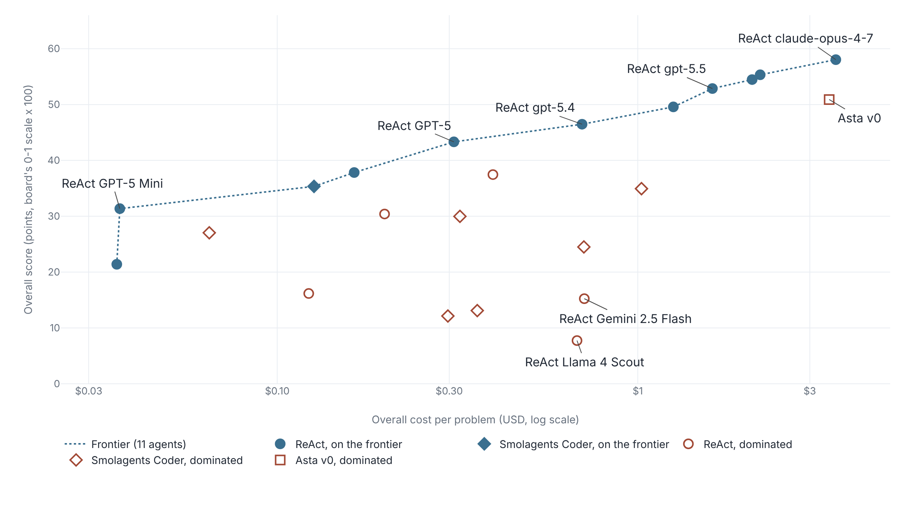

A generic ReAct loop with GPT-5.5 matches Ai2’s science agent at under half the cost
On Ai2’s AstaBench leaderboard, ten of the eleven agents on the cost frontier are one baseline loop with a different model, and the top scorer ranks 21st of 23 per dollar.
AstaBench prices a run’s tokens, not its tools
Ai2’s AstaBench leaderboard lists an overall score and an overall cost per problem for 24 test-split agents. Eleven of them form the board’s cost frontier, meaning no other agent scores as much for less, and ten of the eleven are one Ai2 baseline, a ReAct loop, with a different language model dropped in.1 The lever on both score and cost is the model.
The cost is not a bill. The Asta Environment gives every agent the same tools: a paper-search corpus limited to papers before a per-task date cutoff, and a Jupyter notebook sandbox.2 Inspect logs which models an agent called and how many tokens each call used, and Ai2’s agent-eval toolkit multiplies those tokens by prices from a frozen snapshot of the litellm community price table.23 The tool calls themselves carry no price. Figure 1 draws what is metered.
Ten of eleven frontier agents are one loop with the model swapped
Figure 2 plots the 23 costed agents that attempt all four categories. Read the dotted frontier left to right: ReAct with GPT-5 Mini scores 31.4 at $0.04 per problem, ReAct with GPT-5 scores 43.3 at $0.31, ReAct with claude-opus-4-7 scores 58.0 at $3.54. The frontier spans $0.0359 to $3.5422, a factor of about 99, so the cost axis is logarithmic.1

Asta v0, Ai2’s purpose-built science agent, is the hollow square under the line. It scored 50.9 at $3.40 per problem. ReAct with GPT-5.5 scored 52.9 at $1.61. The 2.0-point score gap is smaller than the 95% interval on either score, so the two tie on score while the generic loop costs 47% as much.1 That compares across a model generation, April 2026 against August 2025. Against the August 2025 ReAct GPT-5 run, Asta v0 scored 7.6 points higher and cost 11 times as much, and the paper leaves its engineering cost out of the figure.12
The scaffold moves scores too, by less. Holding the model fixed and swapping ReAct for Smolagents Coder moves the score by 0.4 to 9.3 points across seven models. Swapping the model inside ReAct moves it from 7.7 to 58.0.1
Opus 4.7 scores first and ranks 21st of 23 per dollar
Divide score by cost and the order changes. ReAct with claude-opus-4-7 gets 58.0 points for $3.5422, or 16.4 points per dollar. ReAct with GPT-5 Mini gets 31.4 for $0.0366, or 857.1
| Agent | Score rank | Score | Cost per problem | Points per dollar | Per-dollar rank |
|---|---|---|---|---|---|
| ReAct claude-opus-4-7 | 1 | 58.0 | $3.5422 | 16.4 | 21 |
| ReAct gpt-5.5 | 4 | 52.9 | $1.6104 | 32.8 | 17 |
| Asta v0 | 5 | 50.9 | $3.3950 | 15.0 | 22 |
| ReAct gpt-5.4 | 7 | 46.5 | $0.7006 | 66.3 | 11 |
| ReAct GPT-5 | 8 | 43.3 | $0.3090 | 140 | 7 |
| ReAct o3 | 9 | 37.8 | $0.1635 | 231 | 5 |
| ReAct GPT-5 Mini | 13 | 31.4 | $0.0366 | 857 | 1 |
Opus 4.7 is still on the frontier, and the frontier prices each step. GPT-5 Mini trails it by 26.7 points at 1% of the cost. Moving from GPT-5 Mini to GPT-5 buys 12.0 points for 8.4 times the cost. Moving from GPT-5.5 to Opus 4.7 buys 5.2 points for 2.2 times the cost, $1.93 more per problem.1 The ranking also favors cheap agents by construction: Smolagents Coder with GPT-5 Mini is third per dollar, and ReAct with GPT-5 Mini beats it on both score and cost.1
Ai2 submitted every costed row, and the top intervals overlap
Costs are token counts times a price table, so they are estimates and not billed amounts, and Ai2 says its costs reflect pricing at a fixed point in time.4 Tool calls carry no price, and reasoning effort is fixed at medium for general solvers.5 All 24 costed rows are Ai2 submissions: 15 ReAct, 8 Smolagents Coder, one Asta v0. Elicit, SciSpace, OpenAI Deep Research and the other commercial agents attempt one category and report no cost, so none can appear on the frontier.1 Overall cost also averages four category means, and the 80 End-to-End Discovery problems supply 69% of the category-cost sum for Opus 4.7.1
Each score is one run. Applying the paper’s Appendix D method to Ai2’s raw result files gives 95% intervals of about ±2.4 to ±3.0 points for the top agents: 58.0 ±2.7 for opus-4-7, 55.3 ±2.4 for opus-4-6, 52.9 ±3.0 for gpt-5.5, 50.9 ±2.5 for Asta v0. The gpt-5.5 and Asta v0 intervals overlap, so the 2.0-point gap between them sits inside the noise; the opus-4-7 interval overlaps opus-4-6’s and sonnet-4-6’s. The board’s chart draws no error bars.62
What the data supports is a model-selection curve for one Ai2-built loop under one frozen price table. It does not show that no agent design could beat that loop, because the board holds three designs with a cost, all submitted by Ai2.
Sources
- Allen Institute for AI · AstaBench leaderboard
- Bragg et al. · AstaBench: Rigorous Benchmarking of AI Agents with a Scientific Research Suite (arXiv 2510.21652, v2)
- Allen Institute for AI · agent-eval toolkit
- Allen Institute for AI · AstaBench leaderboard, About page
- Allen Institute for AI · AstaBench blog post (2025-08-26, updated 10/27)
- Allen Institute for AI · asta-bench-results dataset